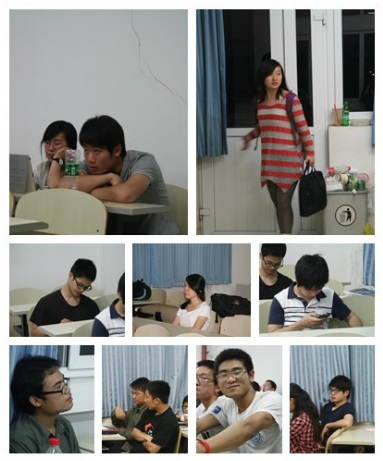

发信人: ZJC (弎和弦), 信区: outdoor
标 题: 野外生存协会换届啦！
发信站: 饮水思源 (2013年06月04日01:07:26 星期二)
2013年6月2日晚19:00 于东中4准时召开了上海交通大学野外生存协会换届大会！鼓掌之~
撒花之~
话不多说、先上图~
与会嘉宾：车协会长与跑虫会长，以及打酱油的某泳协会长 = =
screen.width - 200){this.width = screen.width - 200}">
screen.width - 200){this.width = screen.width - 200}">
先上点老脸暖暖场叭 = = 。。。
老人们~
screen.width - 200){this.width = screen.width - 200}">
附翔哥特写一张——眼神与姿势的配合恰到好处！
screen.width - 200){this.width = screen.width - 200}">
（翔哥真是再次对不住了。。。这次有亮点的图忒少。。。）
会议流程
1、上任会长周致民大人总结工作并且展望未来！
附会长大人煽情演说图一张供野人们膜拜！
screen.width - 200){this.width = screen.width - 200}">
2、新任会长唐珂就职演说及野协的组织架构、下年工作的预期~
3、新部门成员合影~
4、新任各类副会长舵主队长部长们对自己职能的阐释及今后的工作安排~
5、野协象征之传承卷轴交接~
screen.width - 200){this.width = screen.width - 200}">
附卷轴特写一张~
screen.width - 200){this.width = screen.width - 200}">
6、全体与会野人合影！
附合照时皓老师被XX图一张~
screen.width - 200){this.width = screen.width - 200}">
然后散会之~
当然不能忘了每日一锯之欢乐锯高神活动~
screen.width - 200){this.width = screen.width - 200}">
附高神面部表情特写图一张~
screen.width - 200){this.width = screen.width - 200}">
野协的组织架构
是介样滴~
screen.width - 200){this.width = screen.width - 200}">
会长大人：唐珂
以肤色之名为野协代言！
screen.width - 200){this.width = screen.width - 200}">
副会长（依次为）：
娄琪琛（财务） 高鹏远（高神 - - ）（技术部部长） 陈飞帆（卢湾分舵舵主）
screen.width - 200){this.width = screen.width - 200}">
screen.width - 200){this.width = screen.width - 200}">
screen.width - 200){this.width = screen.width - 200}">
技术部名下：
登山队
队长：袁航
队员：陈飞帆 陈之彬 郭亚舟 李樵 罗人和 石鑫栋 宋荟伊 田哲毅 王根俊 王森 徐向飞
杨前昊 张硕
screen.width - 200){this.width = screen.width - 200}">
攀岩队
队长：李樵
副队长：温宗麟
队员：关正卿 严皓 卓本刚 李毅 陆希 兀丰凯 袁航 钱小宇 杨佳佳 杨瑞
（额。。。大家忽略掉乱入的某只。。。）
screen.width - 200){this.width = screen.width - 200}">
定向队
队长：杨志鹏
副队长：罗人和
队员：李樵 钱小宇 许恩馨
screen.width - 200){this.width = screen.width - 200}">
下面是其他部门~
装备部
部长：郭亚舟
副部长：张硕 王森
顾问：闫冬辉
部员：朱颖 陈浩天 虞翔元 范智奕 周子豪
screen.width - 200){this.width = screen.width - 200}">
后勤保障部
部长：王根俊
副部长：温宗麟 邱昚帆 严天玮
部员：陈之彬 邢华
screen.width - 200){this.width = screen.width - 200}">
宣传部
部长：张璟聪
副部长：李樵 刘曦阳 周子豪
screen.width - 200){this.width = screen.width - 200}">
组织部
部长：田哲毅
副部长：王彦岚
（嗷嗷~在一起！）
screen.width - 200){this.width = screen.width - 200}">
卢湾分舵
舵主：陈飞帆
副舵主：钱小宇
技术部部长：杨前昊 部员：邹思奕 杨佳佳 许恩馨
组织部部长：肖凌月 部员：胡亚男 何翌晨 薛慧菁
（好叭。。。男女比例差异分分钟就体现出来了 = =）
screen.width - 200){this.width = screen.width - 200}">
结束语：流水账肿么会有结束语呢。。所以还是上图叭~
每一个野人都不会忘的：“行诸山野，立命天地”
screen.width - 200){this.width = screen.width - 200}">
我们传承，我们不会忘记每一届野人们对协会的感情和投入
无论是老人们，还是前任的部长和队长们。。。
 screen.width - 200){this.width = screen.width - 200}">
我们是野人们！
screen.width - 200){this.width = screen.width - 200}">
我们是野外生存协会，行诸山野，立命天地！
screen.width - 200){this.width = screen.width - 200}">
screen.width - 200){this.width = screen.width - 200}">
野协在新的一年里，越办越好！
--
自然自由自在，如雲如海如山。
※ 来源:·饮水思源 bbs.sjtu.edu.cn·[FROM: 183.192.199.232]
※ 修改:·lllxxl 于 2013年06月04日11:22:22 修改本文·[FROM: 59.78.32.180]
※ 修改:·lllxxl 于 2013年06月04日11:23:46 修改本文·[FROM: 59.78.32.180]
※ 修改:·lllxxl 于 2013年06月04日22:52:00 修改本文·[FROM: 59.78.32.180]
※ 修改:·ZJC 于 2013年06月05日21:50:05 修改本文·[FROM: 111.186.20.193]
※ 修改:·ZJC 于 2013年06月05日21:51:08 修改本文·[FROM: 111.186.20.193]
|